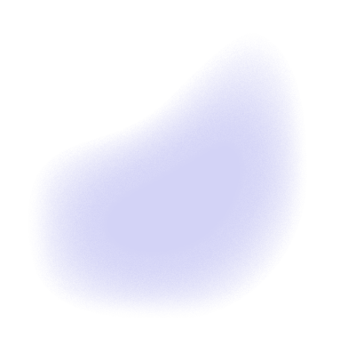

Tom Waits in Hazenstreet 1977
Photographer:
Claude Vanheye
Claude Vanheye was only 18 when he started photographing famous rock stars. His first posed photos of Jimi Hendrix, John Lennon, Frank Zappa and Michael Jackson inspired and encouraged him to look for the person behind the artist. In the 70s, he was not only The Netherlands youngest and most successful photographer, but also one of the leading photographers on the international pop scene. He operated both from his Amsterdam and Hollywood studio.
bron: https://gupmagazine.com/articles/claude-vanheye/
Location photo